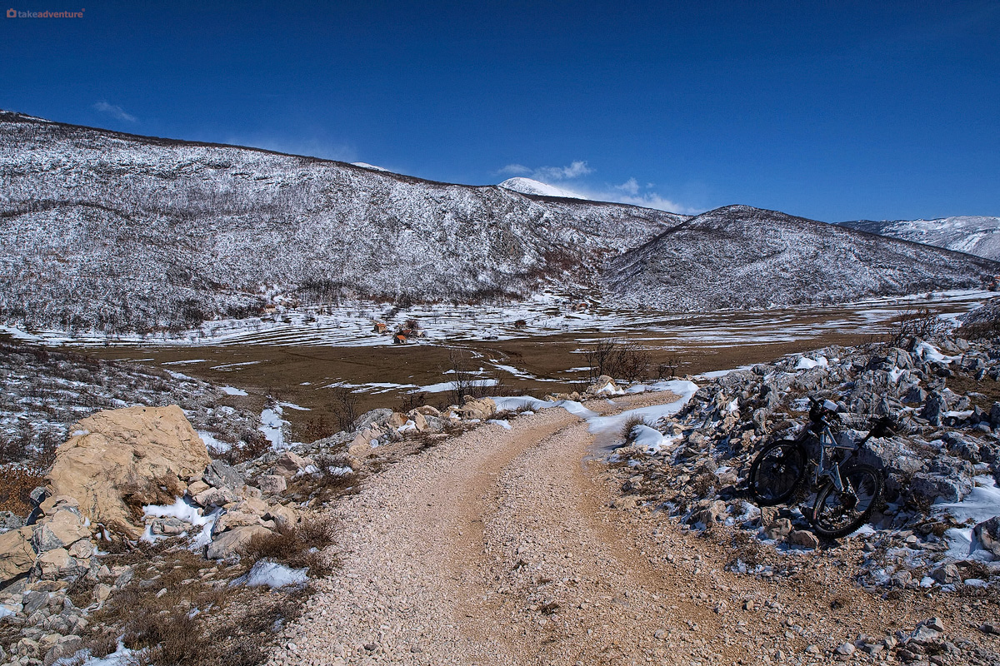
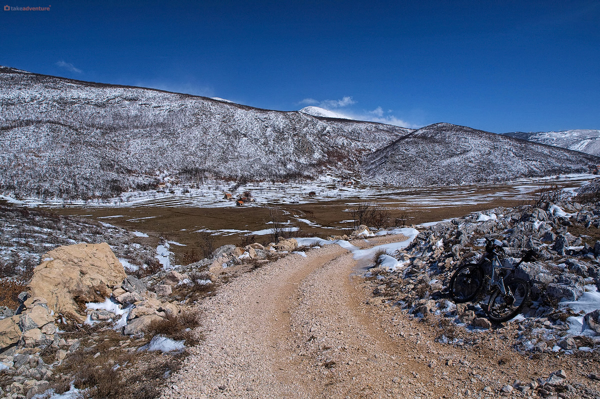

Cetina je najduža rijeka srednje Dalmacije. Jedna od temeljnih obilježja Cetine jest raznolikost reljefa kojim protječe i njezina podzemna povezanost s visokim poljima u jugozapadnoj Bosni s kojih pritječu znatne količine vode, što je čini izdašnom i za najžešćih suša. Nažalost, ove njezine specifičnosti učinile su je vrlo pogodnom za hidroenergetsko iskorištavanje, što je za posljedicu imalo znatno izmijenjenu današnju sliku rijeke.Za razliku od mnogih naših rijeka, Cetina nije sakrila svoje vrelo u tamu dubokog kanjona pod strmim i nepristupačnim klisurama, niti u sjenu visokih jela ili u kakvu skrovitu pećinu. Naprotiv, modro oko Glavaševa vrela, vrela Cetine, ili Milaševog jezera, kako ga još zovu, glavnog izvora Cetine, na jedinstven način ukrašava ogoljeli ambijent stjenovitog krša, smjelo na površinu izbacujući ledenu vodu. To je jedno od naših najljepših jezerskih vrela.Da su blagodati života uz Cetinu prepoznate još od prapovijesti dokazuju brojna arheološka nalazišta duž cijelog toka rijeke, od kojih su najznačajnija smještena upravo ovdje u Sinjskom polju. Prisutnost ilirskog plemena Delmata iščitava se iz brojnih zapisa koje je za sobom ostavio moćni Rimski Imperij. Pretpostavlja se da je rimski logor Tilurij u današnjem selu Gardun kod Trilja mogao prihvatiti pet do šest tisuća vojnika, što ga uz Burnum na Krki svrstava među najveća vojna uporišta rimske provicije Dalmatiae koja je obuhvaćala čitav prostor Dinarida.
Pogledaj fotogaleriju rijeke
Rijeka Ruda
Veoma slikovit izvor rijeke Rude s okolnim područjem (0,34 km2) zaštićen je u kategoriji značajnog krajobraza, a obuhvaća izvorišno jezero i kanjon gornjeg toka rijeke do ostatka stare mlinice. Nalazi se na nadmorskoj visini od 350 m u širem predgorju Kamešnice, u dnu duboko usječene zaravni potkovičasto okružene brdima. Strme vapnenačko-dolomitne stijene kanjona, bujno obrasle listopadnom drvenastom vegetacijom, pružaju izvrsno stanište i prostor za gniježđenje desetku vrsta ptica dok prizemna i vodena staništa oko izvora naseljava nekoliko vrsta gmazova i vodozemaca. Budući da je Ruda prepoznata i kao stanište nekih ugroženih i endemičnih vrsta riba (cetinskog vijuna, potočne pastrve, ilirskog klena i lipljena) i rakova (riječnog, potočnog, raka kamenjara i malih jednakonožnih rakova vodenbabura), osjetljivo je područje ove rijeke proglašeno dijelom ekološke mreže za očuvanje tih vrsta pa je i sportsko-rekreacijski ribolov zabranjen.
Atraktivan krajobraz rijeke Ruda koja protječe kanjonom idealan je lokalitet za šetnju i odmor u okruženju prirode. Slapište kraj stoljetne vodenice u kamenu prizor je simbioze vode i kamena te lokalitet koji pršti izvanrednom energijom.
Pogledaj fotogaleriju rijeke
Korita

Korita je naselje u općini Otok, u Splitsko-dalmatinskoj županiji.Naselje se nalazi sjeverno/sjeverno-istočno od naselja Ruda.Nalaze se u podnožju planine Kamešnice.Kamešnica je prekrasna planina za planinarenje u proljetnim i jesenskim mjesecima, no zbog izložnosti zračnim strujama i dodiru dvaju klimatskih područja, mogu se očekivati nagle i nepredviđene promjene vremena, stoga je uvijek potreban oprez.Na Kamešnici se mogu naći brojne biljne vrste iznimne ljekovitosti i čistoće, poput gorske metvice, gorskog pelina, alpskih lišajeva, majčine dušice, kadulje, enciana, čemerike i mnogih drugih. Životinjski svijet nije iznimno brojan jer je planina po vrhovima goletna, pa je naseljavaju većinom gmazovi, nekoliko vrsta gušterica, brojni planinski zelembaći, poskok, planinska riđovka (mala, do 30 cm duljine) te neotrovnice, bjelouška, šara poljarica i dr. Vukovi svoje obitavalište nalaze sa sjeverne strane planine i u pošumljenim dijelovima, zajedno s lisicama, divljim svinjama, a moguć je i susret s risom i medvjedom, iako nisu često viđeni.
Pogledaj fotogaleriju naselja
Ocijeni Otok:
Spol:
muški
ženski
Link za stranicu općine
Veoma slikovit izvor rijeke Rude s okolnim područjem (0,34 km2) zaštićen je u kategoriji značajnog krajobraza, a obuhvaća izvorišno jezero i kanjon gornjeg toka rijeke do ostatka stare mlinice. Nalazi se na nadmorskoj visini od 350 m u širem predgorju Kamešnice, u dnu duboko usječene zaravni potkovičasto okružene brdima. Strme vapnenačko-dolomitne stijene kanjona, bujno obrasle listopadnom drvenastom vegetacijom, pružaju izvrsno stanište i prostor za gniježđenje desetku vrsta ptica dok prizemna i vodena staništa oko izvora naseljava nekoliko vrsta gmazova i vodozemaca. Budući da je Ruda prepoznata i kao stanište nekih ugroženih i endemičnih vrsta riba (cetinskog vijuna, potočne pastrve, ilirskog klena i lipljena) i rakova (riječnog, potočnog, raka kamenjara i malih jednakonožnih rakova vodenbabura), osjetljivo je područje ove rijeke proglašeno dijelom ekološke mreže za očuvanje tih vrsta pa je i sportsko-rekreacijski ribolov zabranjen.
Atraktivan krajobraz rijeke Ruda koja protječe kanjonom idealan je lokalitet za šetnju i odmor u okruženju prirode. Slapište kraj stoljetne vodenice u kamenu prizor je simbioze vode i kamena te lokalitet koji pršti izvanrednom energijom.
Pogledaj fotogaleriju rijeke
Korita

Korita je naselje u općini Otok, u Splitsko-dalmatinskoj županiji.Naselje se nalazi sjeverno/sjeverno-istočno od naselja Ruda.Nalaze se u podnožju planine Kamešnice.Kamešnica je prekrasna planina za planinarenje u proljetnim i jesenskim mjesecima, no zbog izložnosti zračnim strujama i dodiru dvaju klimatskih područja, mogu se očekivati nagle i nepredviđene promjene vremena, stoga je uvijek potreban oprez.Na Kamešnici se mogu naći brojne biljne vrste iznimne ljekovitosti i čistoće, poput gorske metvice, gorskog pelina, alpskih lišajeva, majčine dušice, kadulje, enciana, čemerike i mnogih drugih. Životinjski svijet nije iznimno brojan jer je planina po vrhovima goletna, pa je naseljavaju većinom gmazovi, nekoliko vrsta gušterica, brojni planinski zelembaći, poskok, planinska riđovka (mala, do 30 cm duljine) te neotrovnice, bjelouška, šara poljarica i dr. Vukovi svoje obitavalište nalaze sa sjeverne strane planine i u pošumljenim dijelovima, zajedno s lisicama, divljim svinjama, a moguć je i susret s risom i medvjedom, iako nisu često viđeni.
Pogledaj fotogaleriju naselja
Ocijeni Otok:
Korita je naselje u općini Otok, u Splitsko-dalmatinskoj županiji.Naselje se nalazi sjeverno/sjeverno-istočno od naselja Ruda.Nalaze se u podnožju planine Kamešnice.Kamešnica je prekrasna planina za planinarenje u proljetnim i jesenskim mjesecima, no zbog izložnosti zračnim strujama i dodiru dvaju klimatskih područja, mogu se očekivati nagle i nepredviđene promjene vremena, stoga je uvijek potreban oprez.Na Kamešnici se mogu naći brojne biljne vrste iznimne ljekovitosti i čistoće, poput gorske metvice, gorskog pelina, alpskih lišajeva, majčine dušice, kadulje, enciana, čemerike i mnogih drugih. Životinjski svijet nije iznimno brojan jer je planina po vrhovima goletna, pa je naseljavaju većinom gmazovi, nekoliko vrsta gušterica, brojni planinski zelembaći, poskok, planinska riđovka (mala, do 30 cm duljine) te neotrovnice, bjelouška, šara poljarica i dr. Vukovi svoje obitavalište nalaze sa sjeverne strane planine i u pošumljenim dijelovima, zajedno s lisicama, divljim svinjama, a moguć je i susret s risom i medvjedom, iako nisu često viđeni.
Pogledaj fotogaleriju naselja
Spol: muški ženski
Link za stranicu općine